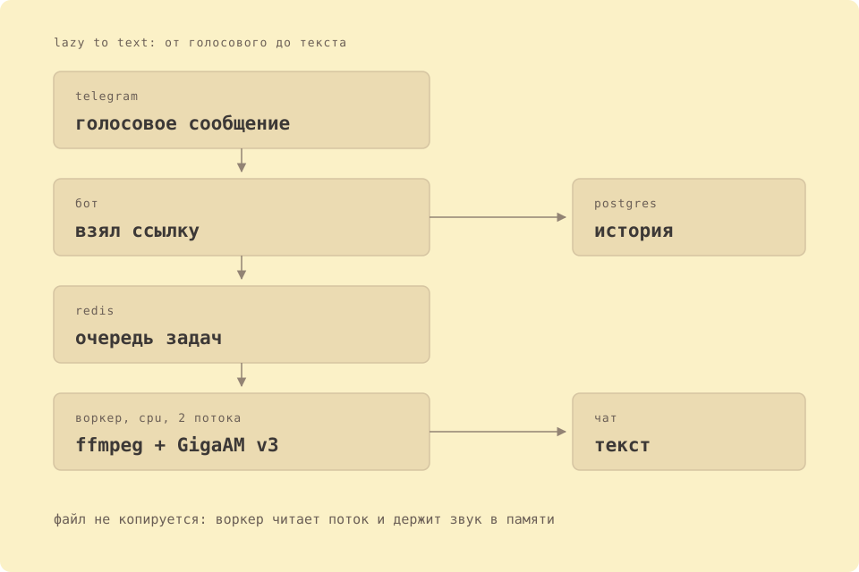

Скажи голосом.
Прочитай текстом.
Пришлите боту голосовое сообщение или видео-кружок, и он вернёт текст с пунктуацией и заглавными буквами. Речь распознаёт GigaAM v3 на вашем сервере: записи никуда не уходят, модель работает на той же машине, что и бот.
MIT. Три контейнера, long polling, без домена и сертификата.
🎧 Скачиваю запись…
🧠 Распознаю…
Привет. Это проверка распознавания речи. Сегодня хорошая погода, и я собираюсь пойти гулять. Сколько будет стоить билет на поезд?
Что происходит между голосовым и текстом
-
Пришлите
Бот принимает голосовые сообщения и видео-кружки, до 300 секунд каждое. Файл скачивается в каталог
data/и уходит в очередь. -
Распознаём
Отдельный воркер декодирует звук через ffmpeg и прогоняет его через GigaAM v3. Запись режется на куски по 25 секунд, разрез ищется в самом тихом месте, чтобы не рвать слово.
-
Получите текст
Ответ приходит в тот же чат: с точками, запятыми и заглавными буквами. Текст идёт блоком кода, поэтому в Телеграме у него есть кнопка «копировать». Длинный текст бот разбивает на несколько сообщений, потому что у Телеграма есть лимит.
Что умеет
Голос и кружки
Оба формата идут одним путём: ffmpeg сам достаёт дорожку из контейнера, поэтому отдельного шага «сделать mp3 из кружка» нет. Запись дольше лимита бот не примет и скажет, сколько секунд максимум.
Пунктуация из модели
GigaAM v3 e2e пишет готовые предложения: точки, запятые, заглавные буквы. Второй модели для пунктуации и похода в облако за правкой нет, текст идёт от распознавателя прямо в чат.
История и статистика
Каждый запрос сохраняется в SQLite: время, длительность, тип медиа, язык и сам текст. /stats показывает людей, запросы и новые заявки за сегодня и за неделю.
Язык на выбор
Русский распознаёт GigaAM, английский распознаёт вторая модель, whisper-base. Язык запоминается в базе и переживает перезапуск бота.
Доступ выдаётся в два нажатия
Бот закрытый: без разрешения он не отвечает на голосовые. Человек пишет /start, администратору приходит карточка с именем, @username и ID, и в ней две кнопки: «Разрешить» и «Отклонить».
Добавить можно и вручную: числовым ID, по @username или пересылкой любого сообщения этого человека. Удаление живёт в карточке человека, с подтверждением, и он получает уведомление.
- Панель
/admin: список людей, добавление, ссылка для приглашения, статистика. - Ссылка
/inviteведёт на бота, её можно просто переслать. - Администраторов может быть несколько:
ADMIN_IDпринимает список через запятую.
🔔 Заявка на доступ
Саша (@ahsasmi)
ID: 2424870
✅ Разрешить 🚫 Отклонить
Модель и цифры
Одна ONNX-сессия на процесс, int8. Ни Torch, ни CTranslate2, ни faster-whisper в зависимостях нет.
| Модель | Язык | Вес | Пунктуация |
|---|---|---|---|
gigaam-v3-e2e-ctc | русский | 214 МБ | своя, из модели |
whisper-base | английский | 107 МБ | частичная |
Вес дан для файла int8 в кэше data/hf. Обе модели прогреваются при старте воркера, короткое голосовое возвращается примерно за секунду.

Всё на вашем сервере
Бот ходит в Telegram и больше никуда. Распознавание идёт на CPU той машины, где стоит контейнер, история лежит в SQLite в каталоге data/, модель там же, в data/hf.
Нет ни облачной расшифровки, ни подписки, ни второго сервиса, которому уходят записи. Токен бота и ADMIN_ID живут в .env, а .env в .gitignore.
- Записи удаляются сразу после распознавания.
- Тексты остаются в базе: это личные данные, доступ к серверу и есть доступ к ним.
- Модель скачивается один раз, дальше старт читает кэш из тома.
- Никакой аналитики и внешних запросов, кроме Telegram и однократной загрузки веса.
Поставить себе
Нужны Docker и токен из BotFather. Дальше три команды.
git clone https://github.com/aa-blinov/lazy-to-text-bot.git
cd lazy-to-text-bot
cp .env.example .env
# TELEGRAM_BOT_TOKEN и ADMIN_ID
docker compose up --build| Переменная | Зачем |
|---|---|
TELEGRAM_BOT_TOKEN | Токен бота. Без него бот не стартует. |
ADMIN_ID | Ваш числовой ID, можно несколько через запятую. Пусто: админом станет первый, кто напишет /start. |
MAX_MEDIA_SECONDS | Максимальная длительность записи, по умолчанию 300. |
ASR_MODEL | Модель для русского, по умолчанию gigaam-v3-e2e-ctc. |
REDIS_HOST | Адрес очереди. В Compose это имя сервиса redis. |
Проверить
docker compose ps: три сервиса, redis healthy, бот и воркер healthy после прогрева моделей. Первый старт скачивает 214 МБ русской модели и 107 МБ английской в data/hf, дальше берёт их оттуда.
Обновить
git pull, затем docker compose up --build -d. База и модель в томе, они переживают пересборку.
Без Docker
pip install -r requirements.txt, затем python -m app.main и python -m app.worker.consumer в двух терминалах.
Что дальше
Напишите боту /start, откройте /admin и добавьте первого человека. Подробности в README и в docs/architecture.md.